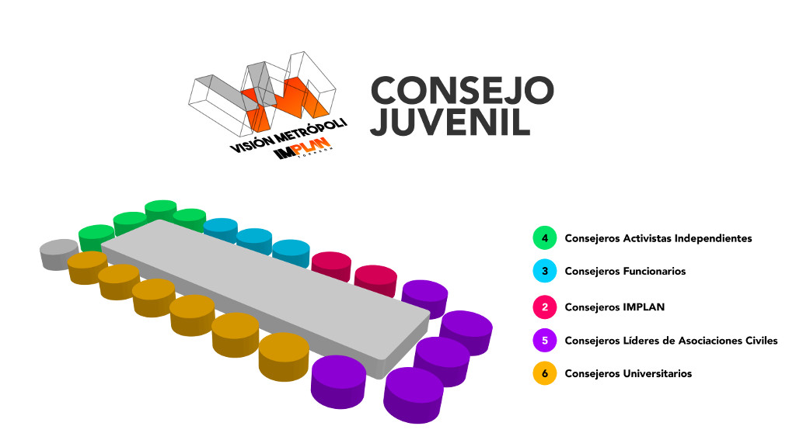

El Consejo Juvenil Visión Metrópoli está conformado de la siguiente manera:
Activistas Independientes
| Nombre | Cargo |
|---|---|
| C. Cristian Gilberto Vazquez Martinez | Activista Independiente |
| C. Elí Castrejón Rodríguez | Activista Independiente |
| C. Héctor Andrés Sáenz Jiménez | Activista Independiente |
| C. Lorena Patricia Barrera Paredes | Activista Independiente |
| C. Roberto Cuan Montano | Activista Independiente |
| C. Rosa Velia Gutiérrez Barrón | Activista Independiente |
| C. Silvia Alejandra Saldivar Romero | Activista Independiente |
Personal de la Administración Pública
| Nombre | Cargo |
|---|---|
| C. Abraham Cuéllar Arias | Director de Atención a la Juventud en el R. Ayto. de Torreón |
| C. Angela Mourey López Negrete | Coordinadora de Proyectos Urbanos en la Dirección General de Ordenamiento Territorial y Urbanismo del R. Ayto. de Torreón |
Cuerpo Técnico IMPLAN Torreón
| Nombre | Cargo |
|---|---|
| C. Alejandra Martínez Avilés | Coordinadora de Consolidación de Proyectos |
| C. Frida V. García Gutiérrez | Secretaria Técnica Visión Metrópoli |
Líderes de Asociaciones Civiles
| Nombre | Cargo |
|---|---|
| C. Aldo Valdés López | Representante de Los Oigo MX |
| C. Jorge Ángel Olvera Morales | Representante de la Asociación Cívica de La Laguna |
| C. Marissa Elizabeth Contreras Sánchez | Representante de AIESEC en La Laguna |
| C. Omar Ortega Herrera | Presidente del Consejo Juvenil Visión Metrópoli |
Cuerpo Estudiantil Universitario
| Nombre | Cargo |
|---|---|
| C. Anuar Sebastian Hernández González | Representante de la Universidad Autónoma de Coahuila |
| C. Argentina Zapata Buendía | Representante del Instituto Tecnológico de La Laguna |
| C. Diana Laura Esparza Holguín | Representante del Instituto de Posgrados en Humanidades A.C. |
| C. Gilberto Eduardo Ríos Buendía | Representante de la Universidad Autónoma de Nuevo León |
| C. José Emmanuel Silva Hernandez | Representante de la Universidad Autónoma de Coahuila |
| C. María Leticia Banda Rodríguez | Representante de la Universidad Autónoma de La Laguna |